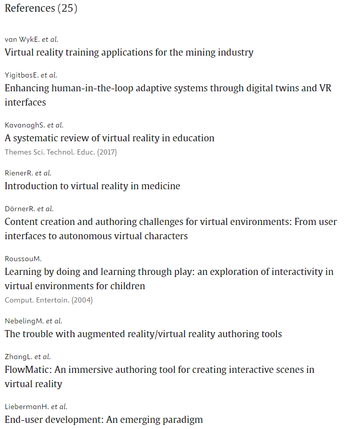

| TITULO | "End-user development for interactive web-based virtual reality scenes" "Desarrollo para el usuario final de escenas interactivas de realidad virtual basadas en la web" |
| AUTORES | Enes Yigitbas Jonas Klauke Sebastian Gottschalk Gregor Engels |
| RESUMEN | "Recent advances in Virtual Reality (VR) technology and the increased
availability of VR-equipped devices enable a wide range of consumer-oriented
applications. For novice developers, however, creating interactive scenes
for VR applications is a complex and cumbersome task that requires high
technical knowledge which is often missing. This hinders the potential of
enabling novices to create, modify, and execute their own interactive VR
scenes. Although recent authoring tools for interactive VR scenes are
promising, most of them focus on experts as the target group and neglect the
novices with low programming knowledge. To lower the entry barrier, we
provide an open-source web-based End-User Development (EUD) tool, called
VREUD, that supports the rapid construction and execution of interactive VR
scenes. To address the aspect of construction, VREUD enables the
specification of the VR scene including interactions and tasks. Furthermore,
our tool supports the execution and immersive experience of the created
interactive VR scenes on VR head-mounted displays. Based on a user study, we
have analyzed the effectiveness, efficiency, and user satisfaction of VREUD
which shows promising results to empower novices in creating their
interactive VR scenes." "Los recientes avances en la tecnología de Realidad Virtual (RV) y la mayor disponibilidad de dispositivos equipados con RV permiten una amplia gama de aplicaciones orientadas al consumidor. Sin embargo, para los desarrolladores noveles, la creación de escenas interactivas para aplicaciones de RV es una tarea compleja y engorrosa que requiere elevados conocimientos técnicos de los que a menudo carecen. Esto dificulta la posibilidad de que los noveles creen, modifiquen y ejecuten sus propias escenas interactivas de RV. Aunque las recientes herramientas de creación de escenas interactivas de RV son prometedoras, la mayoría de ellas se centran en los expertos como grupo objetivo y dejan de lado a los novatos con escasos conocimientos de programación. Para reducir la barrera de entrada, ofrecemos una herramienta de desarrollo para usuarios finales (EUD) de código abierto basada en la web, denominada VREUD, que permite construir y ejecutar rápidamente escenas interactivas de RV. Para abordar el aspecto de la construcción, VREUD permite la especificación de la escena de RV, incluidas las interacciones y las tareas. Además, nuestra herramienta permite la ejecución y la experiencia inmersiva de las escenas interactivas de RV creadas en pantallas de RV montadas en la cabeza. Basándonos en un estudio de usuarios, hemos analizado la eficacia, eficiencia y satisfacción del usuario de VREUD, que muestra resultados prometedores para capacitar a los principiantes en la creación de sus escenas interactivas de RV." |
| PALABRAS CLAVE | Virtual Reality (VR) - Authoring Tools - End-User Development (EUD) - Interactive VR Scenes - Novice Developers - Web-Based Tool - VREUD - Usability Evaluation - Component-Based Construction - Wizard-Based Development - User Satisfaction - Immersive Learning Environments - Programming Knowledge - Interactive Learning |
| ENLACE | Busquedad: Enlace a la Búsqueda |
| REFERENCIAS | El artículo seleccionado cuenta con 25 referencias, siendo las primeras y
mas destacadas por los autores estas:  |